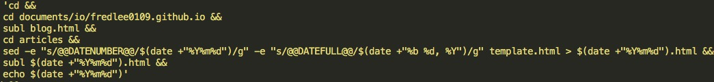

After about 30 minutes of researching and trying, this is the unix command I came up with:

sed -e "s/@@DATENUMBER@@/$(date +"%Y%m%d")/g" -e "s/@@DATEFULL@@/$(date +"%b %d, %Y")/g" template.html
This is the real bulk of the entire unix command, so let me go through one by one.
sed stands for "Ultimate Stream Editor. Picture a stream through a pipe, and sed will do marvelous edits inside the pipe train. Cool huh! The bigger magic is the s/, which stands for "substitute." In a simple case like sed s/name/fred sample.txt, it would find instances of "name" in sample.txt file and replace them with "fred". Also, -e command makes it so that we can pipe multiple sed commands in one line. Thus sed -e s/name/fred -e s/age/21 sample.txt would subsitute age with 21 in addition to the previous substitution! Easy!
Unfortunately for me, naming is the biggest weakness I have... @@DATENUMBER@@ is just a name that I inserted in my template.html file to tell me to replace this instance with a proper date... haha....
The date command is used to print out, or change the value of, the system's time and date information. So if you type in "date" in terminal, it should print out the current date (something like "Mon May 16 17:12:43 PDT 2016"). But of course we don't want to use all of them, thus that is where the formatting comes in. +"" indicates formatting in the manner inside the quotation. %Y : Year in 4 digit form (like 2016). %m : Month in 2 digit form (like 05). %d : Day in 2 digit form (like 16). Combine it all together and date +"%Y%m%d" will print out "20160516" which is exactly how I structure my directories to be. With that in mind, try to guess what date +"%b %d, %Y" should print out! (Hint: %b returns the abbreviated month name (like May)). There are of course more formatting options available with date, and they can be found more here
Now try to connect them all together, and try to decipher what the original unix command does! It shouldn't be that hard.